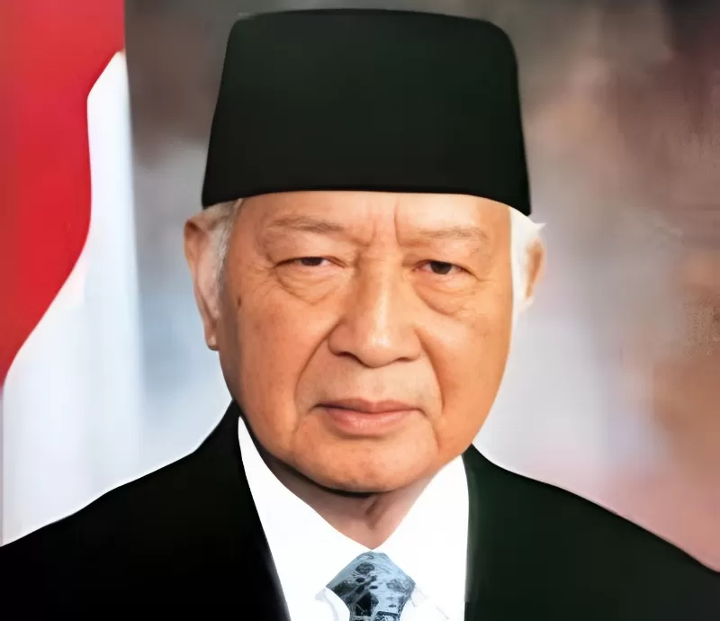
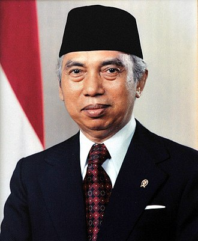

| Nama | Foto | Latar Belakang |
|---|---|---|
| Soeharto |  | Soeharto lahir pada 8 Juni 1921 di Kemusuk, Yogyakarta. Ia adalah seorang jenderal Angkatan Darat yang memimpin Indonesia sebagai Presiden dari 1967 hingga 1998. Terlibat dalam peristiwa G30S/PKI pada 1965, Soeharto memulai era Orde Baru, fokus pada stabilitas politik dan pertumbuhan ekonomi. Meskipun berhasil dalam pembangunan ekonomi, pemerintahannya juga dicirikan oleh pelanggaran hak asasi manusia dan korupsi. Ia mengundurkan diri pada 21 Mei 1998 setelah demonstrasi besar-besaran. |
| Adam Malik |  | Adam Malik lahir pada 22 Juli 1917 di Pematang Siantar, Sumatera Utara. Ia adalah seorang diplomat dan politikus yang menjabat sebagai Wakil Presiden Indonesia dari 1978 hingga 1983. Sebelum itu, ia aktif dalam dunia pers dan politik, serta berperan dalam mendirikan Partai Nasional Indonesia. Malik dikenal sebagai Menteri Luar Negeri yang berkontribusi dalam kebijakan luar negeri Indonesia, termasuk Konferensi Asia-Afrika. Ia dikenal sebagai sosok yang mendukung perdamaian dan kerjasama internasional. |